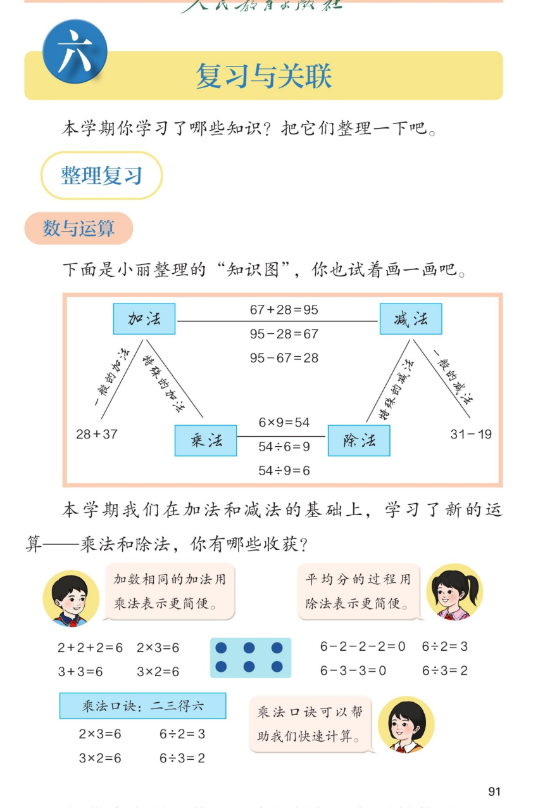

🔊 六、复习与关联 · 课本第 91 页 · 整理复习（数与运算）
人教版《数学》二年级上册 · 有声图文带读 · 先想后看解析 · 画知识图 · 乘法与加法、除法与减法的联系
题数
6
认知
2
强化
3
拓展
1
本页重点
加乘减除一家亲 · 用乘法表示相同加数 · 用除法表示平均分
🎧 分两步学：
① 解析教材图片
——纯声音读图，读到哪一块哪一块闪动提示；关键处先倒计时让你思考，再在图片下方给出解析并朗读。
② 分层提问练习
——六道分层题（认知 / 强化 / 拓展），先思考再展开解析、朗读参考答案；这一步不再回到图片。
也可以随时点任意一句话、图上任意一块单独听；点课本文字卡还会展开答案。
教材图片（点块听读，读到哪块哪块闪）

📖 人教版《数学》二年级上册 · 课本第 91 页 · 图片仅供个人学习，版权归人民教育出版社所有
🤔 想一想（点我可跳过）
课本的文字（点句子：听读 + 看答案）
知识图
加减、乘除为什么手拉手？
看答案 ▾
加法：
67+28=95
→ 减法：95-28=67、95-67=28；
乘法：
6×9=54
→ 除法：54÷6=9、54÷9=6；
💡 合起来用加（乘），分回去用减（除）。
乘法
什么加法能用乘法表示？
看答案 ▾
加数相同
的加法：2+2+2=6 → 2×3=6；
3+3=6 → 3×2=6；
💡 相同加数是几、有几个，就乘几。
除法
连减和除法有什么关系？
看答案 ▾
6-2-2-2=0：减了
3
次 → 6÷2=3；
6-3-3=0：减了
2
次 → 6÷3=2；
💡 从6里连续减去相同的数，减几次刚好减完，商就是几。
口诀
一句口诀能算几道题？
看答案 ▾
二三得六：2×3=6、3×2=6（乘法两道）；
6÷2=3、6÷3=2（除法两道）；
💡 一句口诀管一家：乘 2 道 + 除 2 道。
分层提问练习（先想后看解析）
✖️
认知
知识图中 6×9 的积是多少？用哪句口诀？
看解析
🤔 想一想
解析：
口诀：六九五十四；
6×9=
54
。
➕
认知
67+28 等于多少？说说你是怎么算的。
看解析
🤔 想一想
解析：
个位 7+8=15，写 5 进 1；十位 6+2+1=9；
67+28=
95
。
🧮
强化
看 6 个圆点的点阵，能写出哪四道算式？
看解析
🤔 想一想
解析：
乘法：
2×3=6、3×2=6
；
除法：
6÷2=3、6÷3=2
；
💡 全靠二三得六一句口诀
➗
强化
6-2-2-2=0 可以写成哪道除法算式？为什么？
看解析
🤔 想一想
解析：
减了
3
次 2，刚好减完；
6 里有 3 个 2 →
6÷2=3
。
💡 连减几次，商就是几
🔁
强化
由 67+28=95 能写出哪两道减法算式？
看解析
🤔 想一想
解析：
95-28=67
；
95-67=28
；
💡 和-一个加数=另一个加数
🌈
拓展
所有加法都能写成乘法吗？28+37 为什么不能？
看解析
🤔 想一想
解析：
乘法要求
加数相同
；
28 和 37 不相同，只能老实用加法，得
65
；
🌈 相同加数才请乘法来帮忙
① 解析教材图片
② 分层提问练习
⏹ 停止
纯声音 + 高亮跟随 · 想好才出解析
← 返回导航